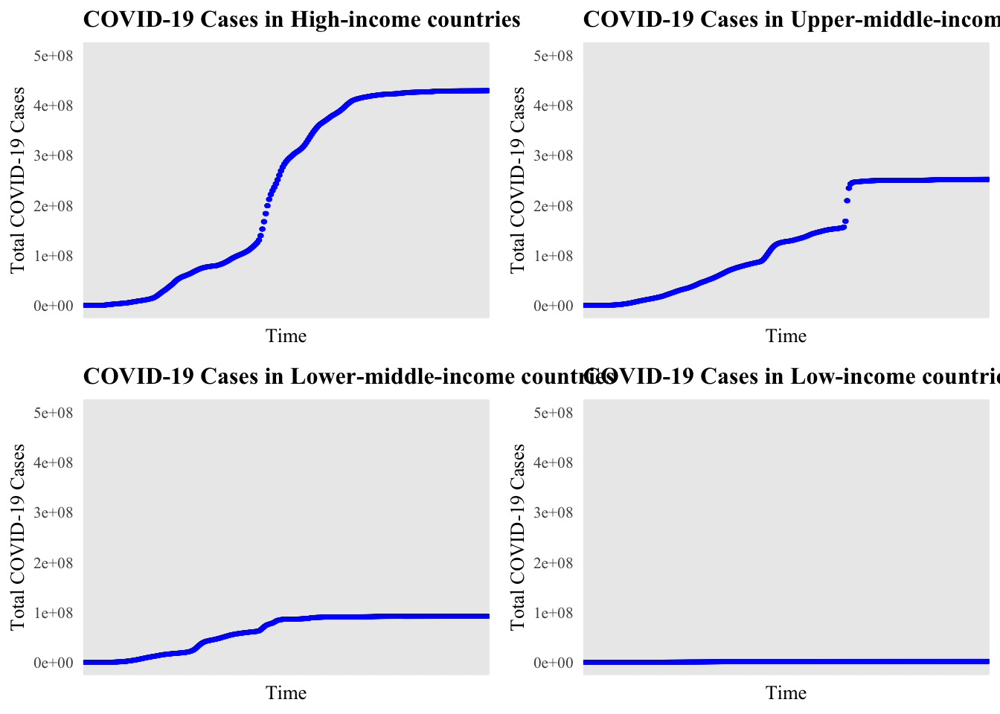
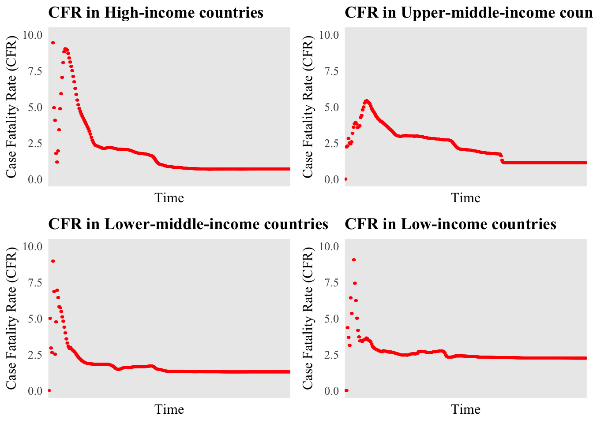

# creating a function to create an overview table with mean, sd and number of NAs
variable_overview <- function(x) {
if (is.numeric(x)) {
list(
Mean = mean(x, na.rm = TRUE),
SD = sd(x, na.rm = TRUE),
MissingValues = sum(is.na(x))
)
} else {
list(
Mean = NA,
SD = NA,
MissingValues = sum(is.na(x))
)
}
}
# use map_dfr to automate variable_overview for all variables
overview <- map_dfr(full_data, variable_overview, .id = "Variable")socs100_report1
COVID-19 Data Analysis
Investigating COVID-19 Case and Case Fatality Rate (CFR) Variations across Economies
Report Word Count: 1508
Assessment Part 1A: Data Exploration and Contextualization
This report aims to examine the variation in COVID-19 cases and case fatality rates (CFRs) across low-income countries (LICs), lower-middle-income countries (lower-MICs), upper-middle-income countries (upper-MICs) and high-income economies (HICs) (World Bank, 2023). It aims to drive data-driven research on the underlying socioeconomic factors in these regions influencing the varying health outcomes in different regions.
The chosen dataset for this analysis is from the COVID-19 Cases and Deaths Database provided by the Our World in Data (OWID, 2024). CFR is the number of confirmed deaths divided by the number of confirmed cases. The chosen dataset provides key information on confirmed cases and deaths across various countries and income groups – making it valuable for data-driven policy-making.
Dataset Structure and Relevance
The chosen dataset comprehensively tracks the spread of COVID-19 over time, reporting cases and deaths in the form of a long-structured dataframe. The dataset groups data for LICs, lower-MICs, upper-MICs and HICs. This is particularly interesting as it allows for key comparisons to be made across economic groups and provide insights into how severely COVID-19 affected areas with varying socio-economic statuses.
The database is particularly relevant to this analysis. Firstly, the grouping of economies by income level allows for data-driven analysis between economic status and health resilience. Secondly, the extensive data provided by the database on total number of cases and deaths over time, with no missing values, allows for a deeper analysis of CFRs over time. Additionally, Our World in Data collects data from official sources, which have been cited as well, making this dataset informative and reliable.
For a social science analysis, this dataset can help explore how structural factors such as economic resources and healthcare infrastructure, contribute to a country’s health resilience. This report aims to analyze and compare CFRs across these economies to gain a better understanding of the impact of socio-economic factors affecting the damage from COVID-19.
Variables
The variables from the full dataset are described below.
| Variable | Description |
|---|---|
| Date | Indicates the specific date for which case/death counts are recorded for a location, with each entry in the YYYY-MM-DD format. |
| Location | Categorical variable which indicates country, region or the income level of the economies for which the data is reported. |
| Total Cases | Numerical variable which indicates the cumulative count of of confirmed COVID-19 cases reported. |
| New Cases | Numerical variable which indicates the number of new confirmed cases of COVID-19 on that date. |
| Total Deaths | Numerical variable which indicates the cumulative count of deaths reported from COVID-19. |
| New Deaths | Numerical variable which indicates the number of new deaths reported from COVID-19 on that date. |
| Bi-Weekly Cases | Numerical variable which indicates the number of cases reported from COVID-19 in a set time period of two weeks. |
| Bi-Weekly Deaths | Numerical variable which indicates the number of deaths reported from COVID-19 in a set time period of two weeks. |
| Weekly Cases | Numerical variable which indicates the number of cases reported from COVID-19 in a particular week. |
| Weekly Deaths | Numerical variable which indicates the number of deaths reported from COVID-19 in a particular week. |
Table 1: All Variables from COVID-19 Dataset from OWID Database
Note: New variables were created for this analysis using the above pre-existing variables from the dataset. These will be discussed in Part 2A.
Dataset Overview
An overview of the variables is important to gain a clearer understanding of the dataset.
To obtain a table presenting the Mean, Standard Deviation and Number of Missing Values for each variable in the dataset, a function variable_overview can be created. This is done below using if and else. Then, map_dfr can be used to automate applying the function to all variables and avoid repetition. map_dfr is simply another type of map function which binds the rows into a single dataframe, which will allow to apply kable from kableExtra to present an overview of the dataset in a clearer format.
| Variable | Mean | SD | MissingValues |
|---|---|---|---|
| date | NA | NA | 0 |
| location | NA | NA | 0 |
| new_cases | 8.017360e+03 | 229664.867 | 1645 |
| new_deaths | 7.185214e+01 | 1368.323 | 1196 |
| total_cases | 7.365292e+06 | 44775816.767 | 0 |
| total_deaths | 8.125957e+04 | 441190.138 | 0 |
| weekly_cases | 5.628718e+04 | 606312.779 | 2875 |
| weekly_deaths | 5.044260e+02 | 3595.456 | 2426 |
| biweekly_cases | 1.130443e+05 | 1167969.709 | 4597 |
| biweekly_deaths | 1.013047e+03 | 7162.040 | 4148 |
Table 2: Dataset Overview
It can be noted that the variables total_cases, total_deaths, date, and location have 0 missing values. This data analysis analyses variations in COVID-19 cases and CFRs, which concerns total cases and total deaths. Thus, there are no missing values to be dealt with for the relevant variables. Moreover, the mean and SD values for total cases and total deaths are not informative figures as these variables show cumulative numbers.
For other variables, such as new cases, it is interesting to note that the average number of new cases everyday across all locations is over 200,000. However, upon further inspection, it is noted that the locations included in the dataset are not just individual countries, but also continents, income group classifications, and world data. This suggests that the mean and SD values are very likely skewed as the data is not filtered.
Assessment Part 1B: Data Processing and Functional Programming
To prepare the data for analysis, various steps were taken to tidy and process the data.
CFR Function
Firstly, to simplify the process of calculating CFR, a function can be created to automate this process for multiple locations and return a percentage from 2 numeric inputs, and also handle any possible scenarios where the denominator is 0.
This avoids repetition and any potential errors from division or repetition, thereby making it a useful and reusable function for automation.
# create a function which can automate calculating rate or percentage from 2 inputs
rate <- function(x, y) {
if_else(y == 0, NA, (x / y) * 100)
}Filtering Data
Filtering the dataset included selecting the relevant variables and ensuring data entries were all after the first COVID-19 case was reported. This will reduce the dataset to only relevant data and improve clarity.
# select relevant variables and filter the data
full_data <- full_data %>%
select(date, location, total_cases, total_deaths) %>% # select relevant variables
filter(total_cases>0) # filter dataset to only include when first case of COVID-19 was recordedRenaming and Filtering Location
The location variable was filtered to only include data from LICs, lower-MICs, upper-MICs and HICs. This will ensure the data is clear and relevant. It aims to adapt the location variable into the following variable:
| Variable | Description |
|---|---|
| Income Group Classification | Categorical variable which indicates the income level of the economies for which the data is reported. This includes LICs, lower-MICs, upper-MICs and HICs. |
Table 3: Income Group Classification as a Variable
# rename and filter data by four income level classifications
full_data <- full_data %>%
rename(countryincomelevel = location) %>% # rename location to countryincomelevel
filter(countryincomelevel %in% c("High-income countries",
"Upper-middle-income countries",
"Lower-middle-income countries",
"Low-income countries")) # filter to include only relevant income levelsCreating CFR
CFR can be created for analysis of fatality rates over time. R does not have any percentage function, so, the rate function can be used to create this new variable and avoid any potential errors from division or repetition. The new variable cfr is:
| Variable | Description |
|---|---|
| CFR | Numerical variable between 0-100 indicating the total number of confirmed deaths from COVID-19 as a percentage of the total number of confirmed cases of COVID-19 up until a certain date. |
Table 4: CFR as a Variable
# create new variables using the custom rate function
full_data <- full_data %>%
mutate(
cfr = rate(total_deaths, total_cases), #calculate cfr
)These data tidying and wrangling tasks will ensure smooth data analysis and comparison.
Assessment Part 2A: Data Visualization and Functional Programming
This section aims to create relevant data visualizations employing functional programming to gain further insight into COVID-19 cases and CFRs across LICs, lower-MICs, upper-MICs and HICs.
Defining Regions for Analysis
Firstly, we can filter out the four income group classifications by creating a new object, locations. By focusing on the total cases and CFRs in these regions, we can better observe variations across different economic contexts.
# filter out location by groups of countries by economic status
locations <- c("High-income countries", "Upper-middle-income countries", "Lower-middle-income countries", "Low-income countries")Function for Automating Visualizing Total COVID-19 Cases over Time
To plot and compare the total cases over time in the four groups, a function, plot_cases, can be created. This function will allow the reproduction of the” Total COVID-19 Cases over Time” plot for various groups. More importantly, creating a function and application using map will automate this process, and avoid repetition and any potential errors from it.
# create a function to plot total cases over time for different countries grouped by economic status
plot_cases <- function(location_name) {
full_data %>% # set data to full_data
filter(countryincomelevel == location_name) %>% # filter to plot for the four income group classifications
ggplot(aes(x = date, y = total_cases)) + # set x and y variables and create plots
geom_point(color = "blue", size = 0.5) + # customize plots
labs(x = "Time", y = "Total COVID-19 Cases", title = glue("COVID-19 Cases in ", location_name)) + # set names for plots using the glue function
scale_y_continuous(limits = c(0, 500000000)) + # set scale for y-axis
theme_minimal()+
theme(
text = element_text(family = "times new roman"), # set font family times new roman
plot.title = element_text(size = 12, face = "bold", family = "times new roman"), # customize title
axis.title = element_text(size = 10, family = "times new roman"), # customize axis title
axis.text = element_text(size = 8, family = "times new roman"), # customize axis text
axis.text.x = element_blank() # remove x axis text (as this is simply a list of dates, which will make the plots messy)
)
}Functions for Automating Visualizing COVID-19 CFRs over Time
Similarly, we can create a function, plot_cfr, for plotting CFRs over time.
Automating the Visualization of Total Cases and CFRs over Time
Using plot_cases and plot_cfr, 2 key visualizations can be created for all groups. As opposed to manually applying these functions to each group and plot, we can employ map to automate it.
# use map function to create plots for total cases over time for different locations
plots1 <- map(locations, plot_cases)Variation in Total COVID-19 Cases across Economies

Figure 1: COVID-19 Cases in LICs, lower-MICs, upper-MICs and HICs over Time
For HICs, total cases show a rapid increase, plateauing at around 400 million cases. This indicates that initially, the disease spread rapidly and was eventually controlled, likely due to intervention.
Upper-MICs saw a very similar trend, however, the increase is steeper, implying a sudden outbreak, plateauing at 250 million cases, which is lower than HICs. Total cases in lower-MICs increased at a stable rate, stabilizing at around 100 million cases. These are likely due to under-reporting and under-testing.
Interestingly, for LICs, total cases are substantially lower than others - 2,000,000 cases. This is very likely due to a lack of infrastructure for reporting and testing. However, it can be argued that LICs are less likely to have extensive globalisation, thereby, leading to genuinely fewer cases.
Variations in COVID-19 CFRs across Economies
Warning: Removed 28 rows containing missing values or values outside the scale range
(`geom_point()`).Warning: Removed 7 rows containing missing values or values outside the scale range
(`geom_point()`).
Figure 2: CFRs in LICs, lower-MICs, upper-MICs and HICs over Time
For upper-MICs, the initial CFR is lower than that in high-income countries, at slightly over 5%, but the trend follows a similar one to HICs, settling at around 1.5%. This suggests that there were improvements in healthcare responses. However, under-reporting likely led to lower detection of cases.
Similarly, CFRs for lower-MICs observe a decreasing pattern. However, the CFR settles at around 2%, higher than HICs and upper-MICs, suggesting a lower level of health resilience.
In LICs, although initially, the CFR was relatively high, reaching almost 10%, the CFR settled at 2.5%, higher than all groups, reflecting the lack of resources to manage the impact of the pandemic.
Interestingly, when plotting the CFRs, 14 data entries are values above 100. However, theoretically, CFR should be between 0 and 100. This is an interesting phenomenon to observe. It is likely that the patients were not tested but deaths were reported – thus, leading to a higher number of deaths than cases.
Implications of Trends in COVID-19 Case and CFR Variations
Despite limitations, this analysis provides insight into the correlation between economic status and pandemic outcomes. HICs showing lower CFRs and faster response might indicate better healthcare infrastructure and resources. Data-driven policy-making can target aid and health interventions to LICs and MICs, which tend to experience higher CFRs due to limited resources.
Assessment Part 2C: Critical Engagement with GenAI Tools
A key opportunity where I had the chance to employ Generative AI tools was during the visualization processes. While creating a function to plot the variation in cases/CFRs over time, I noticed the axis text on the x-axis was a list of dates, making the plots very messy and harder to interpret. I learnt from ChatGPT to manage this problem using element_blank() which removed the unnecessary text. As it allowed for a clearer representation, this was added to plot_cases, (seen below), and was used in the analysis.
plot_cases <- function(location_name) {
full_data %>% # set data to full_data
filter(countryincomelevel == location_name) %>% # filter to plot for the four income group classifications
ggplot(aes(x = date, y = total_cases)) + # set x and y variables and create plots
geom_point(color = "blue", size = 0.5) + # customize plots
labs(x = "Time", y = "Total COVID-19 Cases", title = glue("COVID-19 Cases in ", location_name)) + # set names for plots using the glue function
scale_y_continuous(limits = c(0, 500000000)) + # set scale for y-axis
theme_minimal()+
theme(
text = element_text(family = "times new roman"), # set font family times new roman
plot.title = element_text(size = 12, face = "bold", family = "times new roman"), # customize title
axis.title = element_text(size = 10, family = "times new roman"), # customize axis title
axis.text = element_text(size = 8, family = "times new roman"), # customize axis text
axis.text.x = element_blank() # remove x axis text (as this is simply a list of dates, which will make the plots messy)
)
}Additionally, while writing this project on Quarto, I found GenAI tools helpful in proofreading text and identifying any small errors. As Quarto does not have any built-in editor, for example like that in Microsoft Word, GenAI was a useful proof-reading tool.
However, there are instances where ChatGPT was unable to provide insightful contributions. For instance, when dealing with NAs for total_cases, ChatGPT suggested to simply input the mean value. However, total_cases is a cumulative sum, implying that the mean value does not hold much relevance. This is something that GenAI tools cannot help us with as they do not know the context of the data. Despite this, I found GenAI tools a helpful collaborative tool in refining this data analysis project.
Report Conclusions
This report explored the variations in COVID-19 cases and CFRs across LICs, MICs and HICs.
The findings outlined the variations in healthcare outcomes through CFRs between different economic groups and the importance of targeted intervention in driving health resilience. Data-driven analysis will remain key in understanding COVID-19’s impact across different socio-economic contexts and driving change.